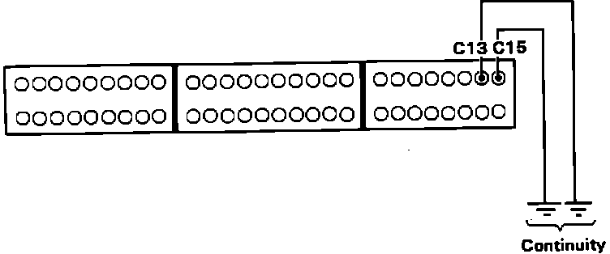

Check Engine Warning Light Is ON - LED Doesn't Blink
1. Attempt to start engine. If engine will not start proceed to step 6, if engine starts continue.2. Turn ignition off.
3. Disconnect connector B, (center 20 pin connector), from ECU.
4. Turn ignition on and observe check engine light.
Light on, proceed next step.
Light off, replace electronic control unit. End of test.
5. Repair short to ground in YEL/RED wire between ECU terminal B6 and check engine light. End of test.
6. Inspect 10 amp ECU fuse in main fuse in engine compartment and replace if necessary. If fuse checks OK, continue.
7. Turn ignition on. While observing check engine light, disconnect one at a time the following sensors:
MAP sensor
Throttle angle sensor
EGR lift sensor (A/T only)
Check engine light on, proceed to step 9.
Check engine light off, proceed to next step.
8. Replace sensor that caused the check engine light to go out. End of test.
9. Disconnect atmospheric pressure (PA) sensor connector and observe diagnostic LED.
Flashes code 13, replace PA sensor. End of test.
Does not flash, proceed to next step.
10. Turn ignition off.
11. Install test harness between ECU and harness connector. Disconnect connector C from ECU, leave connected to main harness. If test harness is not available, carefully backprobe wires at ECU connector.
Code 0 Diagnosis:

12. Check for continuity to ground from terminals C13 and C15.
Continuity, proceed to next step.
NO continuity, proceed to step 14.
13. If C13 showed continuity, repair short to ground in YEL/WHT wire between ECU terminal C13 and EGR lift, PA and throttle angle sensors. If C15 showed continuity, repair short to ground in RED/YEL wire between ECU terminal C15 and MAP sensor. End of test.
14. Reconnect all sensors and ECU connector C.
Electronic Control Unit Pin And Connector Identification:

15. Turn ignition on.
16. Individually connect terminals A16 and A18 to ground while observing check engine light.
Light on after 2 seconds, proceed to step 18.
Light off after 2 seconds, proceed to next step.
17. Check for open in BLK/RED (A18) or BRN/BLK (A16) wire between ECU and ground at thermostat housing. End of test.
18. Check for voltage between terminals A13, A15 and A18 individually.
Battery voltage, replace electronic control unit. End of test.
Not battery voltage, proceed to next step.
19. Check for open YEL/BLK wire between ECU terminals A13, A15 and main relay. If wires check OK, inspect main relay and connections.